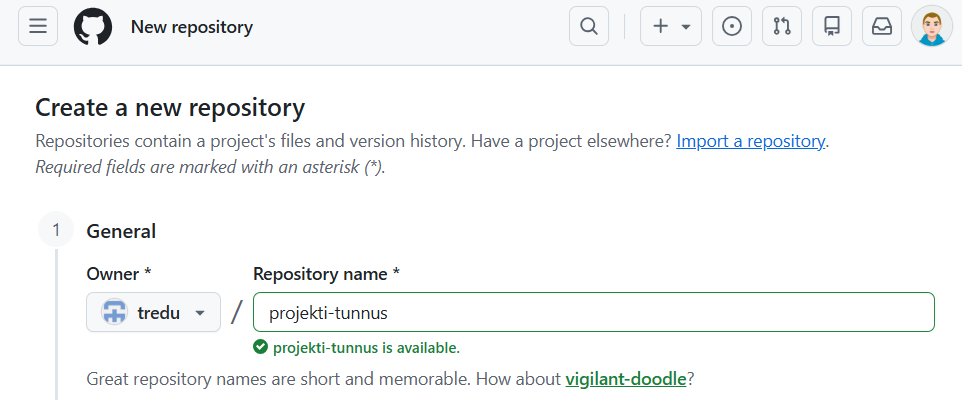
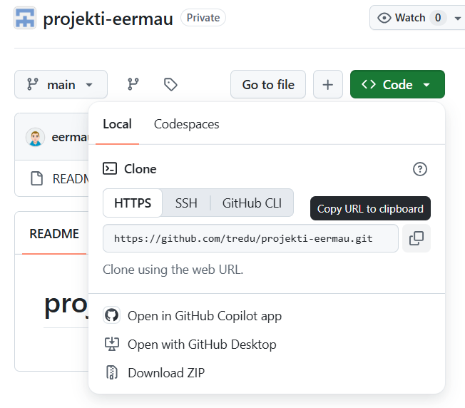

GitHub-repo
Etusivu | GitHub | Projektisuunnitelma | Taitaja | LoppuraporttiLuo uusi GitHub-repo tredu-organisaation alle:

Kopioi HTTPS-linkki

Kloonaa repo Tiedostot-kansion alle komentokehotteen tai Git Bashin avulla
git clone https://github.com/tredu/reposi-osoite.git
Lisää GitHub-repon alle kansio documents, tänne tulisi ensimmäisessä vaiheessa projektisuunnitelma.md.